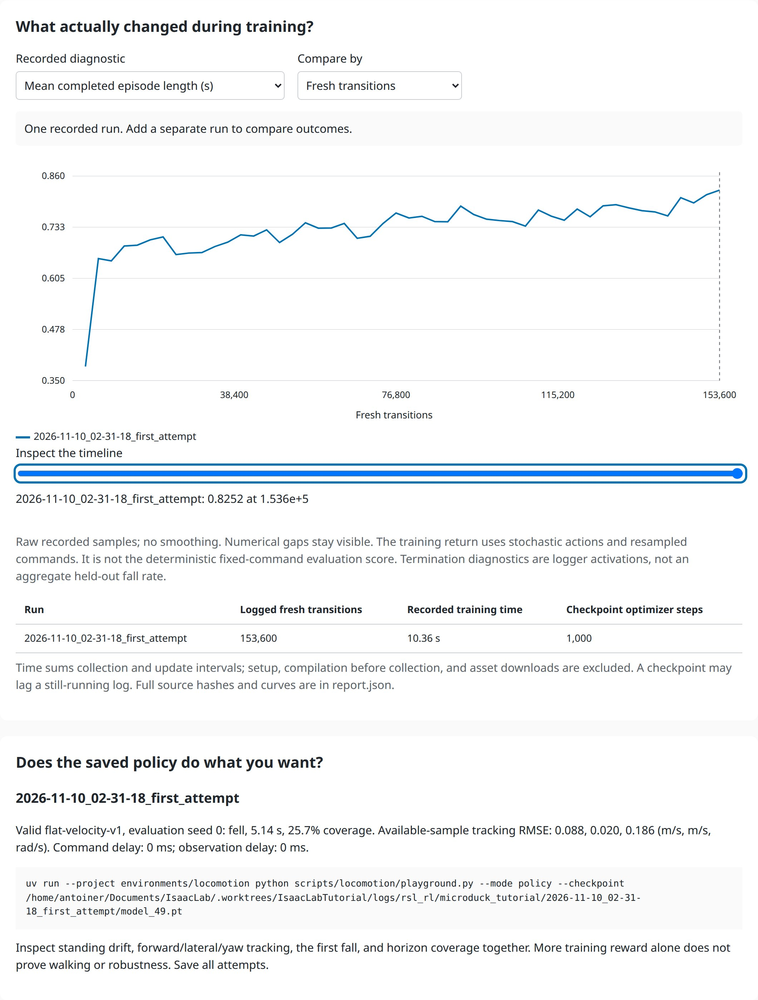
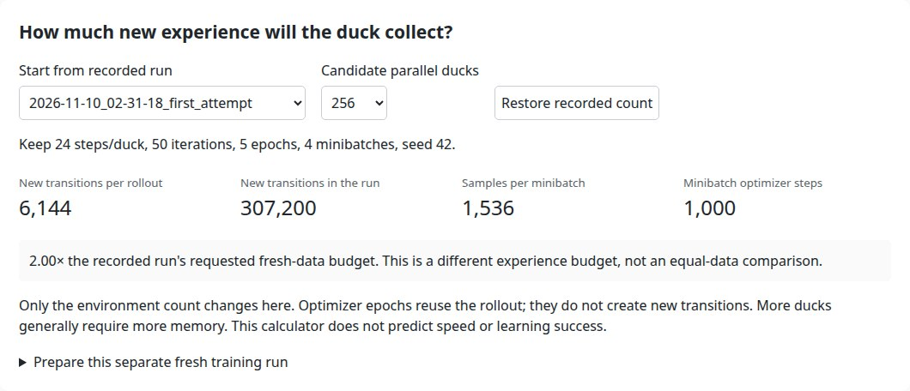
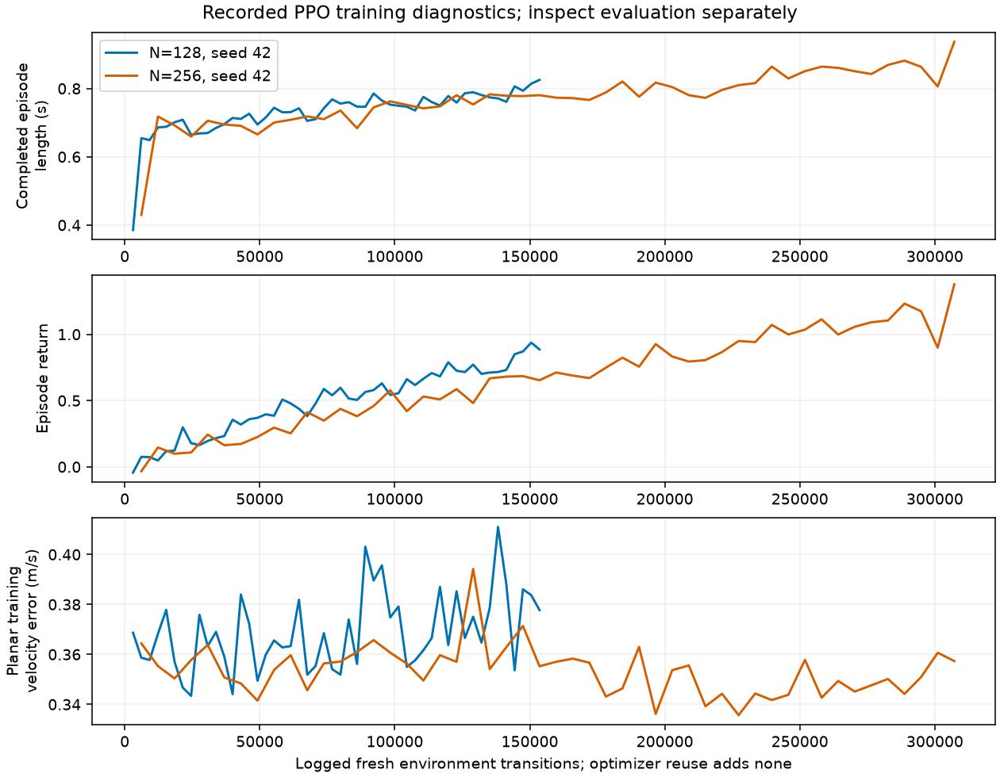
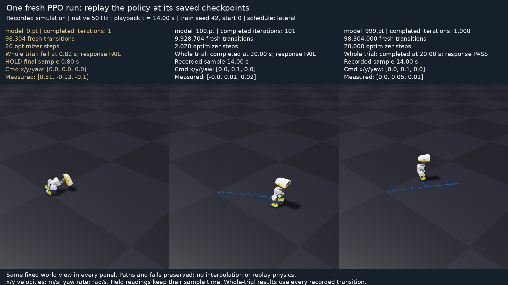

8. Investigate the first attempt¶
Challenge: predict what doubles when you change from 128 to 256 ducks. Then compare the prediction with two real runs.
Open the investigator¶
Start with the run you trained in lesson 2:
uv run --project environments/locomotion python scripts/locomotion/training_workshop.py --run "$DUCK_FIRST_RUN"
Open the printed outputs/training-investigator/index.html in a browser. No server or GPU is needed to use the generated report. Use source outputs/tutorial.env in a new terminal. This selects the exact first run from lesson 2 even if lesson 6 created a newer reward candidate.
See the first attempt's actual progress and replay view

The curve contains the 50 raw logged samples. Its mean completed training-episode length ends near 0.825 s. That stochastic training diagnostic and the frozen policy's deterministic 5.14 s evaluation are different measurements; neither proves a useful gait. The table records the actual budget, and the final panel keeps the fall and limited coverage visible.
Predict, then move a control¶
- Choose the first attempt as the recorded run. Before changing the count, calculate
128 × 24transitions per rollout. - Choose 256 parallel ducks. Which numbers double? Which stay fixed?
- Open Prepare this separate fresh training run and save the candidate plan. It records your prediction and the baseline contract/hashes. Supply the downloaded file's path to the printed launcher command. It verifies the contract again before executing a fresh run; the browser does not start training.
- Return to 128. Predict what ten optimizer epochs would change. More reuse changes optimizer work; it does not collect extra environment transitions.

The calculator changes one factor: parallel environments. Its rollout horizon, iteration limit, epochs, minibatches, and seed remain visible. The calculator is a prediction; inspect the next run's logs and checkpoint to see what actually happened.
The one-factor launcher is available only when the baseline matches the current nominal task and learner configuration. A custom reward, reordered observation vector, changed control timing, or different actor cannot silently revert to defaults. Those runs remain inspectable; use their matching training configuration for a candidate. Changes to these configuration values after saving a plan also stop the launcher. To inspect a saved plan without training, run scripts/locomotion/train_candidate.py --plan with its path and --dry-run through the locomotion environment.
Run the single-factor candidate¶
Reuse the first 128-environment attempt. Run this new candidate:
uv run --project environments/locomotion isaaclab train --rl_library rsl_rl --task MicroDuckTutorial-Velocity-Flat --num_envs 256 --max_iterations 50 --seed 42 --run_name investigator_n256 --visualizer none
Keep its printed run directory. Build a comparison with --run repeated for your two exact directories. The tool reads resolved params/env.yaml, params/agent.yaml, TensorBoard events, and the latest numeric checkpoint. It compares hashes of the task/objective/controller settings and reports differences. This investigator supports fresh single-GPU PPO logs; it rejects missing iteration history and inconsistent global throughput instead of guessing the amount of experience.
Switch Compare by between Completed iterations, Fresh transitions, and Recorded training time. At equal iteration count, the 256-environment run has seen twice as much experience. At equal transition count, it has made fewer PPO updates. Neither axis makes those two experiments an equal-data, equal-update comparison.
Select episode length, reward, planar velocity error, and exploration scale in turn. Move Inspect the timeline to read actual samples. Curves are unsmoothed; a numerical gap stays visible. Invalid evaluation receipts retain their failure reason without inventing duration or tracking scores. Training velocity errors are the task logger's metrics, not the fixed-protocol evaluation RMSE. Termination diagnostics summarize stored per-environment activations; they are not a held-out fall fraction.

Train a longer nominal policy¶
The first 50 iterations checked that learning and replay work. They were not the full walking recipe. When ready, run a separate nominal policy:
uv run --project environments/locomotion --locked isaaclab train --rl_library rsl_rl --task MicroDuckTutorial-Velocity-Flat --num_envs 4096 --max_iterations 1000 --seed 42 --run_name nominal_walking --visualizer none
This requests 98,304,000 transitions and 20,000 minibatch updates. The illustrated reference used an RTX 5090 with 32 GB; the command is not a minimum-memory or duration guarantee. Reduce environments if needed, record the changed budget and evaluate what actually learns. Keep setup/compilation time separate from collection/update time.
Copy the printed directory into these references:
export DUCK_WALK_RUN="logs/rsl_rl/microduck_tutorial/YOUR_NOMINAL_WALKING_RUN"
export DUCK_WALK_CHECKPOINT="$DUCK_WALK_RUN/model_999.pt"
printf 'export DUCK_WALK_RUN=%q\nexport DUCK_WALK_CHECKPOINT=%q\n' "$DUCK_WALK_RUN" "$DUCK_WALK_CHECKPOINT" >> outputs/tutorial.env
uv run --project environments/locomotion python scripts/locomotion/evaluate.py --checkpoint "$DUCK_WALK_CHECKPOINT" --start-protocol balance-starts-v1 --seed 0 --output outputs/walking-check
Use a saved checkpoint that actually exists if you changed the run length. Inspect both metrics and qualification in the receipt. Surviving while failing velocity response means the goal remains unmet. You can also use the optional trained policy to explore later lessons while your own run trains.
Resume a checkpoint without overwriting the first attempt
Keep the first run intact and start a new output run from its explicit checkpoint:
uv run --project environments/locomotion --locked isaaclab train --rl_library rsl_rl --task MicroDuckTutorial-Velocity-Flat --checkpoint "$DUCK_FIRST_CHECKPOINT" --num_envs 128 --max_iterations 10 --seed 42 --run_name resume_first_attempt --visualizer none
Match the original environment count and configuration if you changed them. In this pinned runner, --checkpoint loads the model, normalizers and optimizer by default; --max_iterations 10 requests ten additional collection/update cycles. A new simulation starts, so this is not an exact continuation of the old physical states or random stream. The runner's checkpoint index can repeat its loaded index; use optimizer counters and logs when counting completed work.
Compare the loaded and new checkpoint's optimizer steps: ten cycles with five epochs and four minibatches add 200 optimizer updates. Open the new run separately in TensorBoard. The training investigator accepts complete fresh logs beginning at iteration zero and intentionally rejects this resumed history. Do not mix resumed runs into the independent fresh-seed comparison in lesson 9.
Check the behavior separately¶
Use the fixed evaluator on each exact checkpoint. To show its results inside the report, add --evaluation with each receipt's path. A receipt must match a selected checkpoint's SHA-256; choosing a different policy's evaluation is rejected. The report shows its seed, conditions, available duration, coverage, and failure alongside tracking error.
In the captured example, both runs used seed 42, horizon 24, five epochs, four minibatches, and 50 iterations:
| Run | Fresh transitions | Checkpoint optimizer steps | Recorded collection + update time | Fixed-protocol result |
|---|---|---|---|---|
| 128 ducks | 153,600 | 1,000 | 10.36 s | Fell at 5.14 s; 25.7% coverage |
| 256 ducks | 307,200 | 1,000 | 10.71 s | Reached 20 s; 100% coverage |
These are actual RTX 5090 measurements, excluding setup and asset downloads. Hardware, caching, and workload affect timing; the table is not a speed promise.
The surviving candidate still has tracking error. Its short-run stochastic training episodes and deterministic evaluation also measure different behavior. One seed and one deterministic nominal start do not establish a reliable improvement or a reference walking benchmark. Preserve the failed attempt; do not compare its short pre-fall RMSE as if it completed every command segment.
Record: identify one plausible failure cause and one observation that would distinguish it from another cause. For the next run, choose one change and state its experience budget before launching.
Compare early, middle and late checkpoints from a longer run
Predict which snapshot first survives, and which follows every command. These three checkpoints come from one separate 4,096-environment training run, training seed 42, evaluated independently from the same actual balance-starts-v1 start, seed 0. All camera panels preserve the same fixed world view.

| Saved checkpoint | Completed iterations | Fresh transitions | Optimizer steps | This fixed-start result |
|---|---|---|---|---|
model_0.pt |
1 | 98,304 | 20 | Fell at 0.82 s |
model_100.pt |
101 | 9,928,704 | 2,020 | Survived 20 s; failed command response |
model_999.pt |
1,000 | 98,304,000 | 20,000 | Completed 20 s and passed response criteria |
model_0 is saved after the first collection/update cycle. It is not an untrained policy. The counts come from checkpoint optimizer counters and contiguous event logs, rather than filenames alone. These snapshots show one learning history and one evaluation start; they do not estimate variation across independent training seeds. Training need not improve monotonically.
To make a comparison from your own longer run, evaluate its selected checkpoints separately using identical starts and commands:
uv run --project environments/locomotion python scripts/locomotion/evaluate.py --checkpoint PATH_TO_YOUR_FULL_RUN/model_0.pt --start-protocol balance-starts-v1 --seed 0 --output outputs/progress/iteration-0
Replace the run-directory placeholder with your saved run. Repeat with model_100.pt and model_999.pt, choosing a distinct output directory each time. Open a matched pair with compare.py --reference FIRST_RECEIPT --candidate SECOND_RECEIPT through the locomotion environment. Preserve the early failure when interpreting progress.
Keep investigating in TensorBoard
uv run --project environments/locomotion python -m tensorboard.main --logdir logs/rsl_rl/microduck_tutorial
Inspect reward, mean episode length, velocity errors, exploration scale, losses, and ending diagnostics together. A high upright reward can coexist with poor command tracking. The nominal task disables extra sensor corruption, command/observation delay, battery variation, pushes, and curricula while retaining the BAM actuator model. Head/body commands remain fixed. Physical behavior, observed inputs, and learning diagnostics help distinguish causes; an extra training budget alone is not a diagnosis.